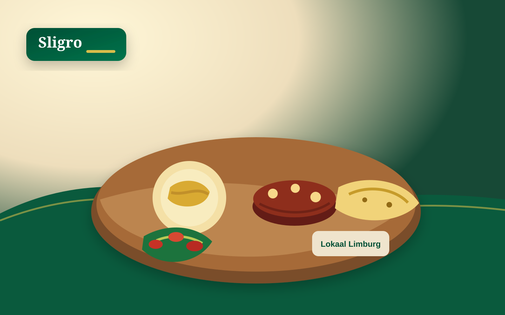
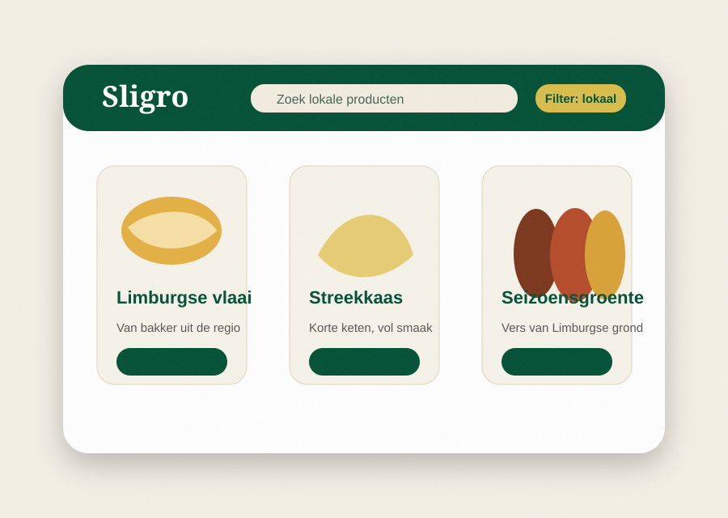
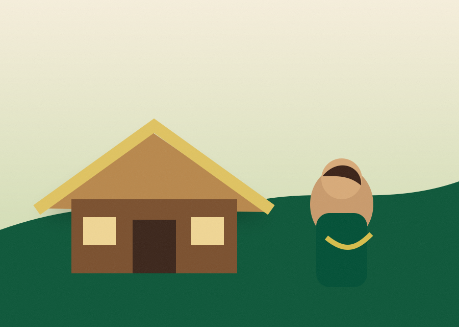
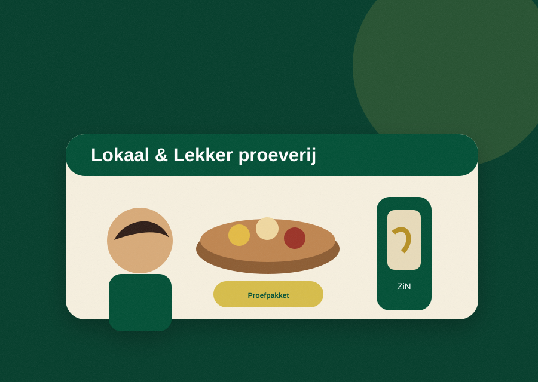
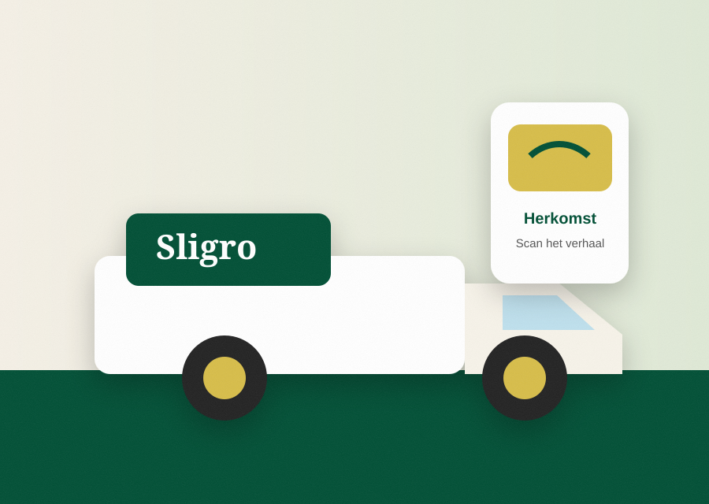

Bakkerij
Limburgse vlaai
Voor koffie, dessertkaart en lunchconcepten met een herkenbaar streekverhaal.
Vanaf € 9,95
Ontdek lokale producten, leveranciersverhalen en praktische inspiratie waarmee je jouw gasten een sterker regionaal verhaal vertelt.

De ondernemer zoekt overzicht. Daarom is het aanbod opgebouwd rond herkenbare categorieën, met herkomst, toepassing en leverancier direct zichtbaar.
Voor koffie, dessertkaart en lunchconcepten met een herkenbaar streekverhaal.
Vanaf € 9,95

Voor borrelplanken, lunchgerechten en lokale menu-accenten.
Vanaf € 12,50

Verse producten van regionale grond, passend bij wisselende menukaarten.
Dagprijs

Een laagdrempelige samplebox voor ondernemers die het aanbod willen ervaren.
Intro € 30,00
Elke leverancier krijgt een vast format: beeld, korte herkomsttekst, quote en directe link naar het product. Zo kan de horecaondernemer het verhaal makkelijk gebruiken richting zijn gasten.
Duidelijke herkomst en regionale beschikbaarheid.
Content die bruikbaar is voor menukaart, socials en bediening.
Geschreven voor ondernemers die weinig tijd hebben.
De briefing benoemt dat het huidige lokale aanbod onvoldoende zichtbaar is. Deze pagina laat zien hoe een duidelijke webshoplaag de keuze eenvoudiger maakt.
Ondernemers hoeven niet meer handmatig te zoeken naar producten met herkomstwaarde.

Een tastbaar kaartje of QR-code maakt van een levering een communicatiemoment.
Bundels helpen ondernemers snel starten met een lokaal aanbod op hun kaart.
Leveranciersdagen, proeverijen en workshops maken het assortiment tastbaar en verlagen de drempel voor een eerste aankoop.
Ontmoet producenten, proef seizoensproducten en ontvang een introductieaanbod voor de eerste bestelling.
De website is ingericht als digitale vertaling van de 360°-campagne: eerst inspireren, daarna bewijzen, vervolgens activeren.
Concept, contentstrategie, leveranciersselectie en sampleboxen.
Social ads, OOH, eerste portretten en e-mailcampagne.
MagaZiNe thema-editie, PR, ZiN-workshop en POS-materiaal.
Introductiekorting, proeverijen, LinkedIn-campagne en eindmeting.
Een statische GitHub Page als campagnehub: snel te uploaden, responsive en volledig zonder backend.